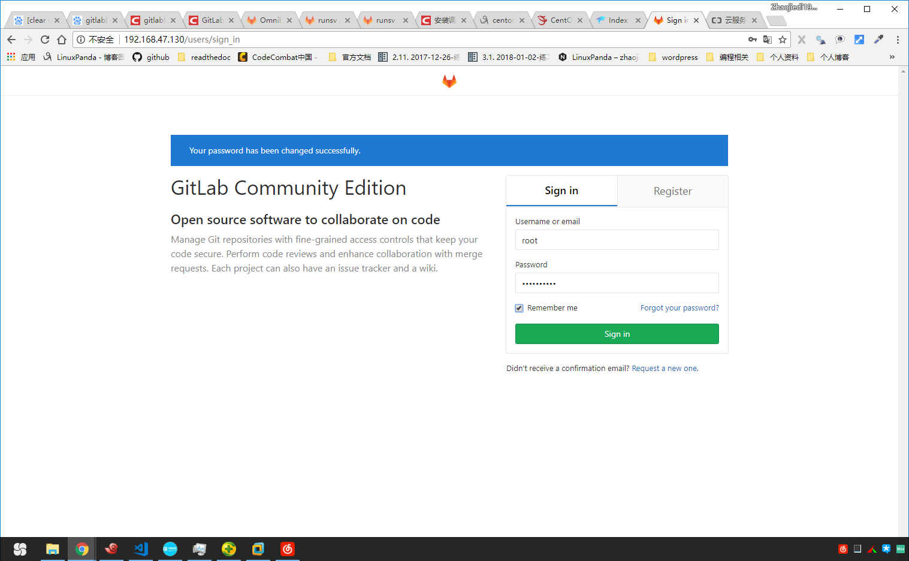
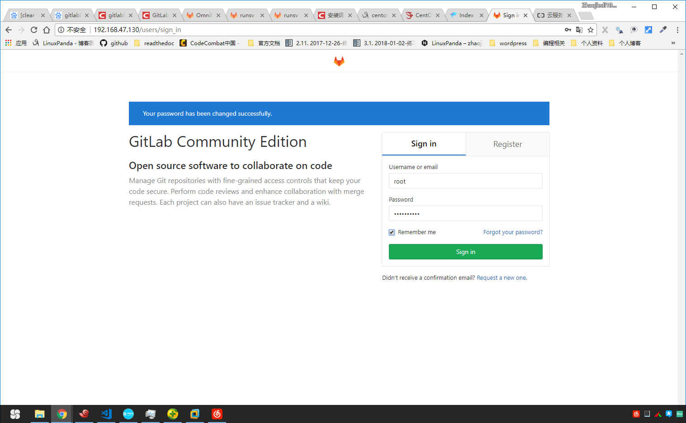

13.3. gitlab本地部署¶
13.3.1. 安装和配置必要的依赖¶
[root@centos-7 ~]# yum install postfix
[root@centos-7 ~]# systemctl start postfix
[root@centos-7 ~]# systemctl enable postfix
如果postfix启动不起来，提示no local interface found for ::1。可以修改下 /etc/postfix/main.cf中inet_interfaces = all。
13.3.2. 添加gitlab的仓库并安装包¶
13.3.2.1. 执行脚本添加¶
[root@centos-7 ~]# curl https://packages.gitlab.com/install/repositories/gitlab/gitlab-ee/script.rpm.sh | sudo bash
[root@centos-7 ~]# yum -y install gitlab-ce
Note
这个包大概440M大小，需要一定的等待时间。
13.3.2.2. 手工添加¶
[root@centos-7 yum.repos.d]# vim gitlab-ce.repo
[gitlab-ce]
name=Gitlab CE Repository
baseurl=https://mirrors.tuna.tsinghua.edu.cn/gitlab-ce/yum/el7/
gpgcheck=0
enabled=1
这个使用清华的镜像，没有使用国外的，下载可能会快点。
13.3.2.3. 修改配置文件的url¶
[root@centos-7 src]# vim /etc/gitlab/gitlab.rb
external_url 'http://localhost'
13.3.3. 启动下gitlab¶
启动gitlab
[root@centos-7 src]# systemctl enable gitlab-runsvdir.service
[root@centos-7 src]# gitlab-ctl reconfigure
这个配置大概需要10多分钟，耐心等待，我是centos7的系统，安装一直有问题。
错误修复
[root@www ~]# yum install gem
[root@www ~]# gem sources --add https://gems.ruby-china.org/ --remove https://rubygems.org/
[root@centos-7 src]# gitlab-ctl reconfigure

 
